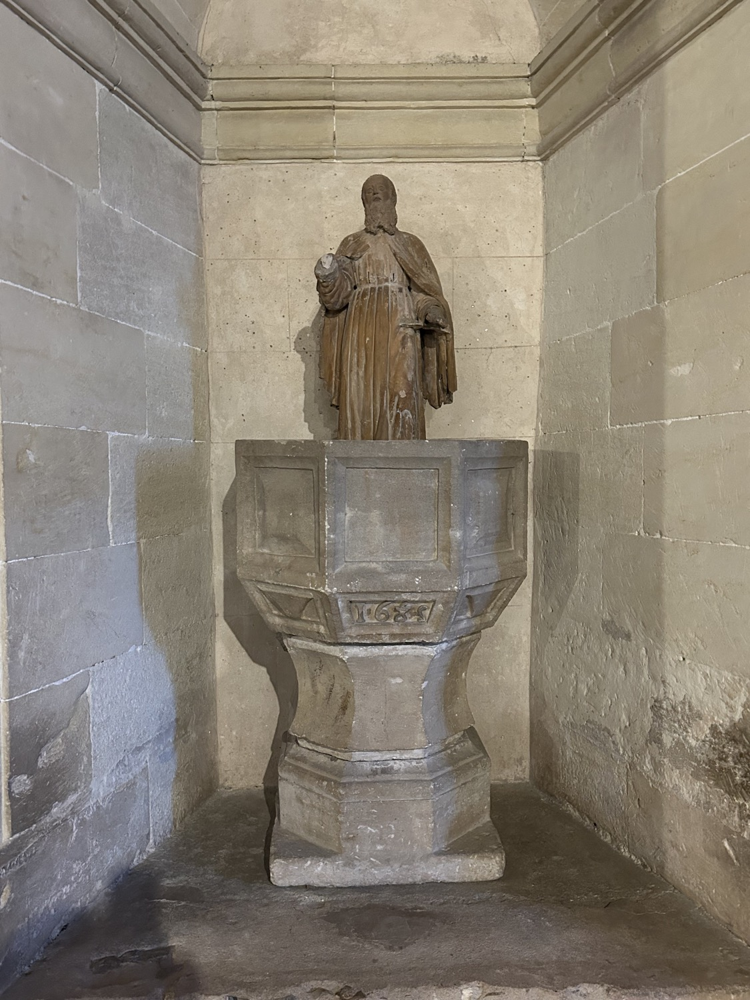

L'any 1620, don Pau Sureda i Campfullós, senyor de l'alqueria de Sant Martí, obtingué permís per crear un nucli de població a les seves terres de Son Pere Jaume, en el terme municipal de Petra, origen de l'actual Vilafranca de Bonany. Aquell mateix any s'hi inicià la construcció de la primera església, d'estil renaixentista. Va ser dedicada a santa Bàrbara i sant Martí, els sants patrons de la família Sureda, i depenia de la parròquia de Petra. Aquest primer temple tenia un altar major i quatre altars laterals, dos a cada costat, i es creu que ocupava el solar dels dos primers trams de l'església actual. La primera missa s'hi digué el dia de santa Bàrbara, 4 de desembre, de 1631.
La seva construcció va sofrir una forta oposició dels petrencs, que estaven construint una església nova a Petra i volien evitar que es desviassin recursos cap a la de Vilafranca. La major part de la despesa de la construcció la pagà la família Sureda. Els vilafranquers, a banda de la mà d'obra, aportaren els diners de la venda dels animals que trobaven perduts pel camp, de la qual cosa els Jurats de Petra se n'exclamaven: “lo cual mos pareix meravella i cosa nova may usada.”
Els primers anys venia un capellà de Petra a celebrar els actes de culte, fins que l'any 1685 s'hi instituí una vicaria, dependent de la parròquia de Petra; aquesta vicaria es mantingué fins que Vilafranca es convertí en parròquia independent l'any 1913. El dia de sant Agustí, 28 d'agost, del 1685 es diposità a l'església per primer cop el Santíssim Sagrament, portat en processó des de Petra, i des de llavors es recordà aquesta efemèride celebrant l'anomenada festa de la Reserva; aquesta va ser la festa grossa de l'estiu a la vila fins que, durant la segona meitat del segle XX, va ser substituïda a poc a poc per les festes de la Beata, al voltant del 28 de juliol.